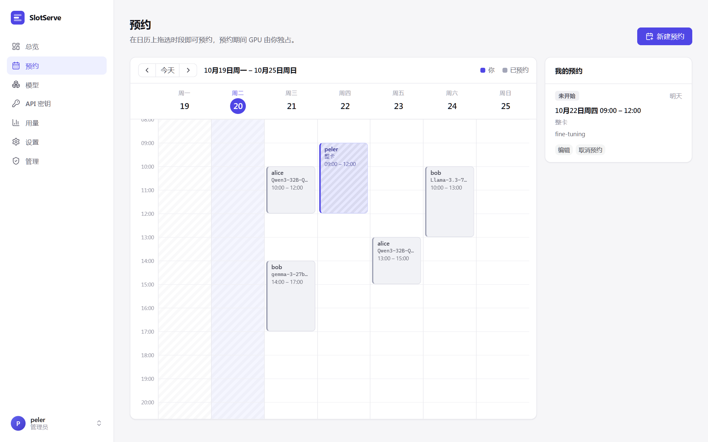
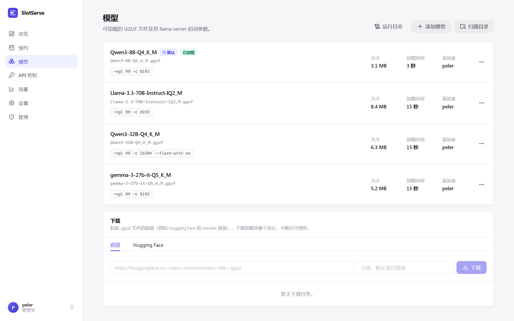
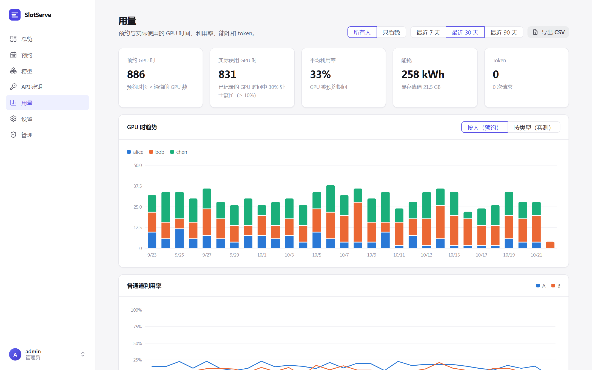
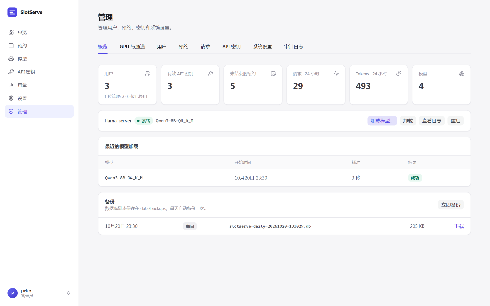

使用指南¶
预约 GPU¶
打开预约页面，在日历上拖选时段，或点击新建预约。选择预约类型、调整时间，可选填写备注。

- 预约按 30 分钟对齐（可配置），不能重叠。
- 已经开始的时段仍可预约，从现在开始；对话框里的立即开始就是做这个。
- 对话框会显示模型的预计加载时间。如果前一个预约正好在你开始时结束且使用不同模型，加载会占用你时段的开头，对话框会提示。
- 预约期间只接受你的 API 密钥。
- 未开始的预约可取消；进行中的可提前结束，默认模型会立即恢复。
预约类型¶
| 类型 | 时段内会发生什么 |
|---|---|
| 运行模型 | 开始前加载你选的模型（可选它的某个参数预设），期间只接受你的 API 密钥。 |
| 整卡 | 开始前停止推理进程，整张 GPU 空出来跑训练或其他程序，期间接口返回 503 gpu_exclusive；结束后自动恢复默认模型。 |
| 开发环境 | 时段内运行一个带 GPU 和 SSH 的 Docker 容器，/workspace 一直保留。详见开发环境。 |
修改预约¶
- 未开始的预约可以编辑：改时间、模型、参数预设或备注。
- 进行中的预约可以延长 30 分钟、1 小时或 2 小时（前提是之后的时间空闲），也可以通过编辑缩短。
- 每周重复会在之后几周的同一时间创建预约：要么每周都能约上，要么一个都不建，并提示哪一周冲突。取消系列中的一次时，可选择只取消这一次或连同之后的全部取消。
- 管理员可以编辑、取消任何人的预约，也可以替他人预约，当事人会在已绑定的聊天平台上收到通知。
候补¶
想要的时段已被占用时，对话框会提供加入候补。该时段空出来后（有人取消或提前结束），SlotServe 会自动为你预约；如果取消勾选空出时自动预约，则只通知你。未结束的候补显示在我的预约下方。
通道与审批¶
有多组 GPU（「通道」）时，日历上方按通道分页，预约弹窗里要选择通道。开启审批模式后，弹窗会提示你的预约是否需要管理员审批；提交后显示为待审批，审批结果会通知你。详见多 GPU 与推理后端。
配额¶
管理员可以限制每人每周最多预约的小时数，以及同时持有的未结束预约数。管理员本人不受限制。
模型¶
模型页面列出所有登记的模型，包括推理后端、大小、预计加载时间和启动参数。

- 扫描目录：把模型目录中新增的
.gguf文件登记为 llama.cpp 模型。 - 添加模型：手动登记模型：选择推理后端（llama.cpp、vLLM、SGLang 或自定义），填写文件、目录或 Hugging Face 仓库名。
- 编辑：修改名称（客户端看到的
modelid）、启动参数和说明。模型的添加者和管理员可以编辑或删除。 - 设为默认（管理员）：没人预约时使用的模型。有多个通道时，这里设置的是第一个通道的默认模型，其他通道在管理 → GPU 与通道中设置。
- 运行日志：显示推理进程输出的末尾部分，模型启动失败时先看这里。
- 参数预设（在编辑中）：为同一个文件保存其他参数组合，例如
-c更大的长上下文版本。预约时可以选择预设，默认使用模型自己的参数。
模型目录¶
模型目录标签页列出热门开放模型，显示精确的下载大小、每个版本预计需要的显存以及能否在各通道运行。点部署会通过下方的下载队列下载该版本，并以合适的启动参数登记。详见模型目录。
下载模型¶
粘贴 .gguf 文件的直链并点击下载，例如：
https://huggingface.co/<用户>/<仓库>/resolve/main/<文件>.gguf
https://hf-mirror.com/<用户>/<仓库>/resolve/main/<文件>.gguf
也可以切到 Hugging Face 标签页，输入仓库名（如 Qwen/Qwen3-8B-GGUF）并点列出文件，勾选需要的量化版本即可；分卷模型会自动归为一组并下载全部分卷。需要时在管理设置中填写 Hugging Face 地址（如 https://hf-mirror.com）和 Hugging Face Token。
下载逐个进行，先写入 <文件>.part，重试时从中断处续传。完成的 .gguf 会自动登记。分片模型（-00001-of-0000N.gguf）请把每一片都添加进来，第一片会成为模型。
API 密钥¶
访问凭据 → 新建密钥会生成密钥并只显示一次，请保存到客户端或密钥管理工具中。吊销后立即失效。
如果管理员开启了允许用户再次查看 API 密钥（管理 → 系统设置 → 账号），SlotServe 会为每个新密钥保存一份加密副本，所有者之后可以点查看再次显示。开关关闭期间创建的密钥无法查看；关闭开关会删除所有已保存的副本。副本用 SLOTSERVE_SECRET_KEY 加密，更换它之后副本将无法读取。客户端配置见接口。
开启开发环境后，同一页面还可以管理你的 SSH 公钥和环境密码。
用量¶
用量页面以 GPU 时间为中心：预约了多少、GPU 实际工作了多少、耗了多少电。可选最近 7、30 或 90 天，以及所有人或只看我（每个人都能看到所有人的用量）。
- 概览卡片：预约 GPU 时（预约时长 × 通道的 GPU 数）、实际使用 GPU 时（利用率不低于繁忙阈值的时间，默认 10%）、GPU 被预约期间（或你的预约期间）的平均利用率、能耗与显存峰值、token 与请求数。
- GPU 时趋势：按人（预约，来自日历）或按类型（实测）堆叠。类型包括模型预约、整卡预约、开发环境、无人预约时的共享使用（通道的空闲模型或共享环境）以及未使用。7 天以内按 6 小时显示，更长按天显示。
- 各通道利用率随时间的变化。
- 表格：按人（预约与使用 GPU 时、预约期间利用率、显存峰值、能耗、token）、按通道（含占用情况）、按类型、按 GPU、按模型。预约时间多但利用率低，说明 GPU 被预约却没在用。
SlotServe 每分钟记录一次每块 GPU 的利用率、显存、功耗以及当时由谁、以什么方式占用。没有 GPU 指标（没有 nvidia-smi）的机器上仍会记录各通道的占用者，但使用时长、利用率、显存和能耗为空。按分钟的采样 30 天后合并为按小时汇总（管理 → 系统设置 → 维护）。导出 CSV 可下载按人汇总、按天/通道/GPU/类型/人的 GPU 时间、按天的请求汇总或逐条请求。
设置¶
- 外观：语言，以及浅色、深色或跟随系统的主题。点左下角自己的名字也能切换，登录页右上角有浅色/深色按钮。
- 聊天通知：绑定 Telegram、飞书 / Lark、钉钉、企业微信或 QQ，并选择接收哪些通知，见通知与集成。
- 日历订阅：在日历应用中查看预约的私有链接。

管理¶
第一个账号（用初始化码创建）是管理员。管理员的侧边栏里有管理入口。

| 标签页 | 能做什么 |
|---|---|
| 概览 | 用户数、密钥数、未结束和待审批的预约、近 24 小时请求与 tokens；最近的模型加载记录（含失败原因）；重启某个通道的推理进程、查看日志；没人预约时可立即加载模型或卸载，持续指定时长或直到下一个预约 |
| 运行监控 | 每个通道的状态、模型、推理后端、GPU、端口、PID、进行中的请求和调度目标；加载进度（来自推理进程的输出，没有时按时间估算）；失败时显示错误、退出码、重试倒计时和最后几行输出；完整启动命令；可筛选、暂停、下载的实时输出；每次加载的命令和输出摘录 |
| GPU 与通道 | 检测到的 GPU；新建、编辑、删除通道，设置每个通道的默认模型；修改通道当前模型的启动参数并重新加载 |
| 用户 | 新建用户（不需要邀请码）、重置密码、设置或取消管理员、停用、启用或删除账号 |
| 预约 | 所有人的预约，可按状态或用户筛选；通过或拒绝申请；编辑、取消或结束任何预约；替他人预约 |
| 请求 | 每一次接口请求的用户、密钥、模型、状态码、耗时和 tokens，可只看错误 |
| 概览 → 备份 | 每日数据库备份；可立即备份和下载 |
| API 密钥 | 所有有效密钥及其所属用户、最近使用时间；可吊销任意密钥 |
| 聊天渠道 | 每个聊天机器人是否已连接、绑定人数、企业微信回调地址、群机器人测试和公告 |
| 系统设置 | 所有运行参数：注册、预约限制与配额、审批、预加载与超时、推理后端命令、下载、聊天平台与群机器人、数据保留与备份 |
| 审计日志 | 每一次管理操作：谁、在什么时间、做了什么 |
保护规则：
- 不能停用、降级或删除自己的账号，并且始终至少保留一位正常状态的管理员。
- 停用账号会立即登出该用户、拒绝其 API 密钥并取消其未结束的预约；重新启用后密钥恢复可用。
- 删除账号会一并删除其密钥、预约和用量记录。如需保留历史，请改用停用。
- 系统设置立即生效，保存在数据库中并覆盖
.env的值。